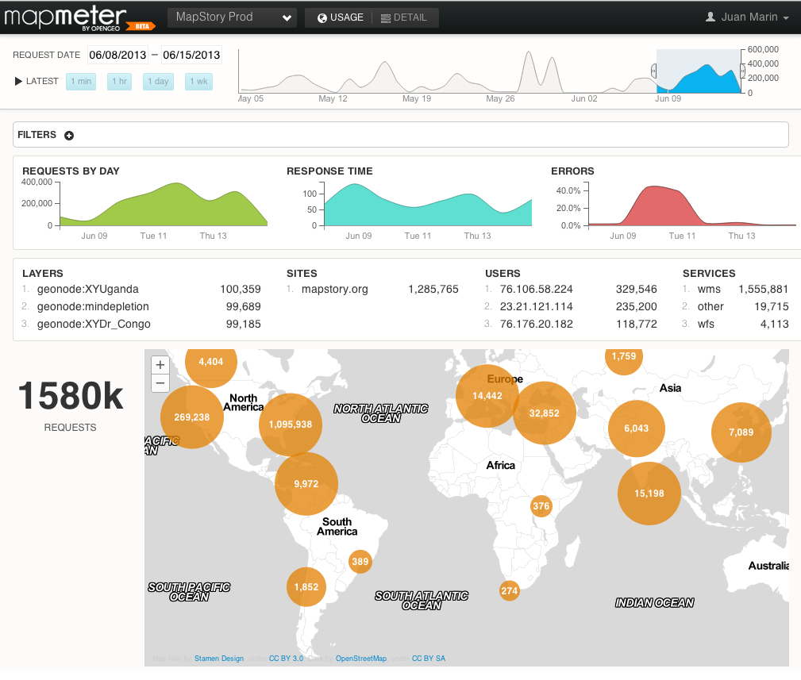

Un vistazo al futuro
Tendencias tecnologicas en el sector Geo
Created by @jmarinotero
Juan Marin Otero
- Ingeniero de Montes por la UPM
- Desarrollador software geospacial
- USA desde 2008
- Open Source baby!
- CTO @ OpenGeo
Que esta pasando en nuestro sector?
El SIG tradicional se muere
Por que esta pasando esto?
Tres tendencias
Mobile Revolution
Cloud computing
Big Data
Mobile Revolution
2016: 200 millones de smartphone en USA
Broadband Mobile coverage
No solo tu telefono
Cloud Computing
Que harias en tu GIS si tuviese acceso a todas esas maquinas?
Tienes acceso
Es barato y rapido
Big Data
2012: Las maquinas generan el 51% del trafico en Internet
70%: trading realizado por maquinas
11 segundos: tiempo medio de una transaccion bursatil

Associated Press, tweet a 2 millones de seguidores
“Breaking: Two Explosions in the White House and Barack Obama is injured”
$136 mil millones evaporados
Tranquilo todo el mundo, esto esta controlado
Big Data en nuestro sector?
Muchos todavia piensan que toda nuestra informacion es estructurada

Ejemplo Big Data 1
Ejemplo Big Data 2
Innovacion
El termino innovacion puede ser definido como algo original que "rompe" en el mercado o en la sociedadRetos
Falta gente con talento
USA: 7.5% paro
Tecnologia: 3 millones de ofertas vacantes
Pensamiento unico
Hablando de software

El futuro es...
Brillante